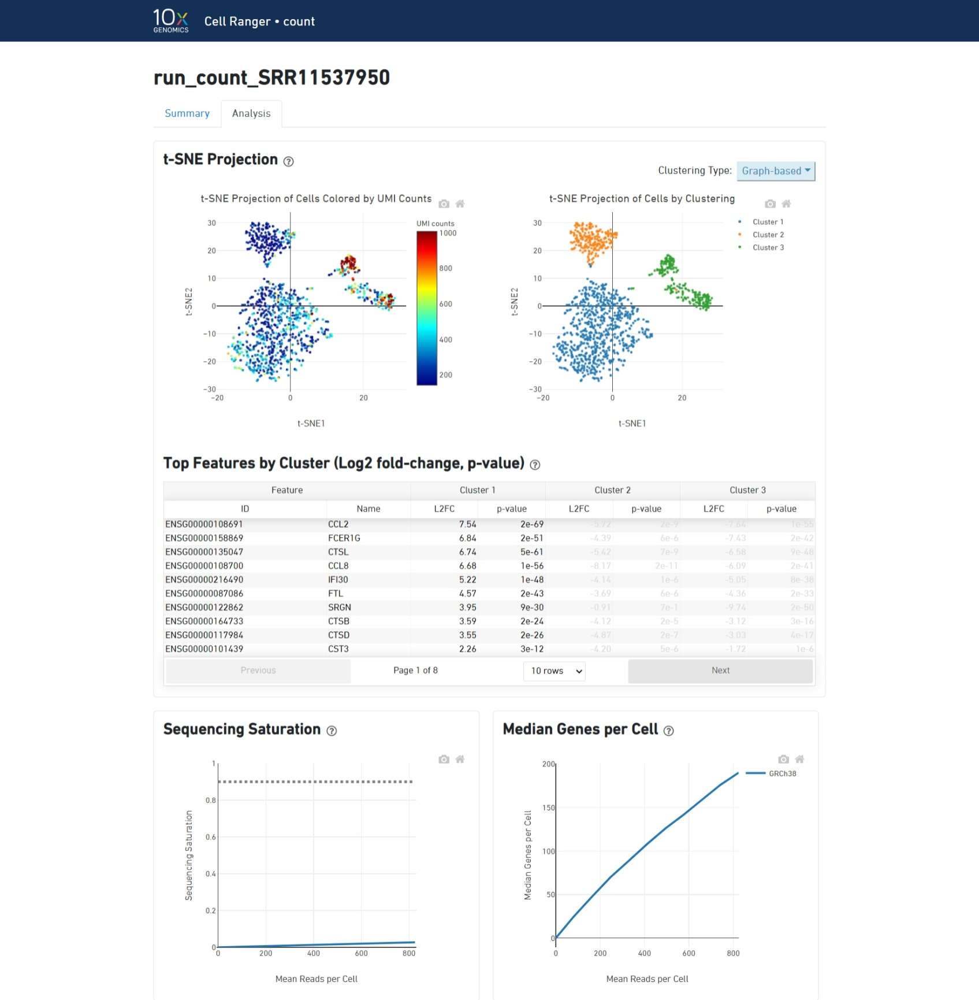

Procesamiento de datos brutos de scRNA-seq
Este cuaderno introduce las operaciones esenciales de la línea de comandos en Linux, abordando comandos fundamentales que pueden aplicarse ampliamente a distintos lenguajes de programación con mínimas adaptaciones. Estas competencias básicas son clave para una gestión eficiente y un análisis riguroso de datos en el ámbito de la biología computacional. Además, se detallan los pasos principales para procesar lecturas de secuenciación sin procesar y transformarlas en matrices de conteo utilizando Cell Ranger, analizando sus salidas más relevantes y su papel en la transcriptómica de células individuales. El procesamiento de datos de scRNA-seq constituye una etapa crítica en el análisis de células únicas. El método de preparación de la biblioteca seleccionado determina si las secuencias de ARN se capturan desde los extremos de los transcritos (por ejemplo, 10X Genomics, Drop-seq) o si abarcan transcritos completos (por ejemplo, Smart-seq), lo cual influye directamente en las estrategias analíticas posteriores y en la interpretación biológica de los resultados.
Instalar utilidades
SRAtoolkit

Aviso: Comandos en consola
Google Colab/Jupyter Noetbook usan por defecto Python como lenguaje de programación. Ambas plataformas permiten el uso de otros lenguajes, como shell script.
- Para esto, en Google Colab usamos "!" antes del código.
- En el caso de Jupyter Notebooks, usamos una celda mágica con %%bash antes de escribir nuestro script.
Esto le indica a Google Colab que el código es del tipo Shell. Para el uso personal, no es necesario el uso de "!"
%%bash
# El signo gato es un comentario, esta parte del código no se está usando. De todas formas sirve para dejar anotaciones importantes.
# Es una práctica común y beneficiosa al crear código, ya que sirve como recordatorio y un mecanismo de reproducir códigos.
# Recomendamos siempre comentar tus códigos y script
echo "Hola, mundo!"
Junto con este Jupyter Notebook, podrás encontrar diferentes comandos en Shell. Dichos comandos serán explicados. A continuación puede encontrar un pequeño set de los comandos más usados.
%%bash
# Crear una carpeta.
# En programación, una carpeta es un directorio. Utilizaremos el nombre directorio de ahora en adelante.
# El nombre carpeta podría ser cualquier cosa (ejemplo: carpeta1, carpeta_1, etc), intenta siempre nombrar los directorios de una forma en la que recuerdes qué información estás guardando ahí.
mkdir carpeta
%%bash
# Lista de archivos y directorios
# En general, los directorios tienen un "/" al final (ejemplo: /Documents/Files/scRNAseq_data/), aquí tenemos tres directorios
ls
%%bash
# Un comando puede ser complementado con argumentos. Los argumentos hacen tu código más específico. Pueden ser indicados con "-", "--", o su posición en el código.
# Es importante conocer acerca del software que quieres utilizar
ls -l
%%bash
# El comando "cd" es utilizado para navegar entre directorios (entrar, salir)
# Si deseas moverte a otro directorio, puedes usar "cd .." para ir al directorio anterior, o sólo cd para moverse hacia adelante
cd
%%bash
# El comando "mv" es utilizado para mover su archivo a un directorio específico
# Lo único que necesita es especificar la ruta al directorio al cual desea mover su archivo
mv tu_archivo nuevo_directorio/
%%bash
# Además, "mv" puede cambiar el nombre de los directorios o archivos. Intenta:
mv carpeta/ directorio/
%%bash
# El comando "cat" muestra todo el contenido de un archivo
cat
%%bash
# Además, puedes concatenar uno o más archivos usando el siguiente comando
cat archivo_1 archivo > archivo_3
%%bash
# El comando "head" muestra las primeras 10 líneas de un archivo
# Similar a la cabeza de "cat"
head archivo
%%bash
# El comando "tail" muestra las últimas 10 líneas de un archivo
# Como la cola de "cat"
tail
%%bash
# El comando "wget" es usado para descargar archivos
# Para descargar los datos, debes agregar el enlace de descarga seguido del comando (ejemplo: un set de datos o base de datos específica, en este caso usamos de ejemplo un set de datos de RNA-seq obtenido de SRA)
wget https://trace.ncbi.nlm.nih.gov/Traces/sra?run=SRR24765940
Instalación
Para empezar, debes descargar el SRA Toolkit para usar la herramienta fastq-dump, la cual permite descargar los archivos del SRA.
El SRA Toolkit es un set de herramientas desarrolladas por el Centro Nacional para Información Biotecnológica (National Center for Biotechnology Information; NCBI) para acceder, descargar, y manipular datos de alta capacidad de procesamiento almacenados en el "Sequence Read Archive" (SRA).
Fastq-dump es una de las herramientas en SRA Toolkit. Es utilizada para extraer datos a partir de identificadores del SRA, llamados accessions, en formato FASTQ o FASTA. FASTQ es un formato común para almacenar datos de secuenciación de ADN y ARN, en el que se incluye la secuencia de las lecturas y su calidad. Fastq-dump permite al usuario convertir los archivos SRA en archivos FASTQ, facilitando el procesamiento y análisis de estos datos en otras herramientas bioinformáticas.
%%bash
# La opción -q es para el modo silencioso, evita mostrar toda la salida de wget y permite ejecutarlo en silencio.
# La opción --output-document es para especificar el nombre del archivo en dónde se guardara el contenido descargado.
wget -q --output-document sratoolkit.tar.gz https://ftp-trace.ncbi.nlm.nih.gov/sra/sdk/3.1.0/sratoolkit.3.1.0-ubuntu64.tar.gz
# .tar.gz es im archivo que se empaquetó usando tar, y luego comprimido utilizando gzip.
# el comando tar es usado para empaquetar o desempaquetar archivos en sistemas Unix/Linux. El nombre "tar" viene de "tape arvchive (empaquetar archivo)"
# -xzf: Indica que tar debería extraer los contenidos de un archivo comprimido con gzip.
tar -xzf sratoolkit.tar.gz
%%bash
# sratoolkit.3.1.0-ubuntu64 es el directorio principal, bin es un directorio intermedio, y fastq-dump es el software de interés.
# -X 3: Limita la extracción de las primeras 3 lecturas del archivo SRA. La opción -X configura el número máximo de lecturas a extraer.
# --stdout: Instruye a fastq-dump para enviar el output a stdout (standard output) en lugar de escribir en archivos locales.
sratoolkit.3.1.0-ubuntu64/bin/fastq-dump -X 3 SRR11537950 --stdout
%%bash
# Vamos a descargar los archivos del SRA: SRR11537950.
# sratoolkit.3.1.0-ubuntu64/bin/fastq-dump: Esta es la RUTA del ejecutable de fastq-dump dentro de la instalación de SRA Toolkit.
# --split-files: Esta opción da la instrucción para que fastq-dump divida el archivo "paired-end" en dos archivos separados.
# --gzip: Esta opción comprime el archivo de salida en formato gzip (reduciendo el tamaño del archivo).
# -X 1000000: Limita el número de lecturas que se extraen.
sratoolkit.3.1.0-ubuntu64/bin/fastq-dump --split-files --gzip -X 1000000 SRR11537950
# Crea un directorio con el nombre igual al número de acceso de SRA.
mkdir -p SRR11537950
# Mueve todo lo que contenga "SRR11537950" y ".fastq.gz" a la carpeta creada en el paso anterior.
mv SRR11537950*.fastq.gz SRR11537950/
# Renombrar los archivos a nombres apropiados para usar en Cell Ranger.
# más información abajo
mv SRR11537950/SRR11537950_1.fastq.gz SRR11537950/SRR11537950_S1_L001_R1_001.fastq.gz
mv SRR11537950/SRR11537950_2.fastq.gz SRR11537950/SRR11537950_S1_L001_R2_001.fastq.gz
%%bash
# lista de archivos
ls
Cell Ranger

Qué es Cell Ranger?
Cell Ranger es un software en suite desarrollado por 10x Genomics para analizar datos de scRNA-seq generados utilizando su propia plataforma llamada Chromium. Este software procesa los datos de secuenciación crudos obteniendo conocimiento significativo, incluyendo matrices de expresión de genes, agrupación de células, y otros análisis río abajo.
Nota:
Cell Ranger requiere más de 12GB de RAM para correr, no funciona con Colab.
Descargar Cell Ranger:Actualizar ellink si ha expirado y luego la referencia genómica correspondiente.
%%bash
# -O: nombre del archivo de salida
wget -O cellranger-10.0.0.tar.gz "https://cf.10xgenomics.com/releases/cell-exp/cellranger-10.0.0.tar.gz?Expires=1768912964&Key-Pair-Id=APKAI7S6A5RYOXBWRPDA&Signature=FMtot0YFitTbWXvsuYSTGPfxYIoqyGJwO1ejvl9r1HJP~NfxT34ffOIelVvXO-iHGLS62iMM3TUV1H7xsRTZ5tPVjH3pW-fEmVyiyKjxuG18vABH0bqXNiIj8QtmsUa-Cfnvotmk1vqk8cuSODH61jDxD-~hIDwW0Fwwtkru1GfZLLUKKxceVZuCQedlTULYQrxy1w4Lyx8E0duJvSjLWhhtw1ZJOOz~lsmdkiJXbkSDyILmMqafiqRxKWF1KGv6nt-bAscAXWgdAz8hA73mNcOVIOMbrHE863aK5qsTdKRiX99DNfIe8rV5VButQzHqvWWRUNNGAaSa6ZJXnJSteQ__"
%%bash
wget "https://cf.10xgenomics.com/supp/cell-exp/refdata-gex-GRCh38-2024-A.tar.gz"
Alternativamente tambien puedes descargar la version 10.0.0 desde un repositorio de GitHub que generamos como respaldo, pero primero tendras que quitar el simbolo "#" para que deje de estar comentado, ya que no es necesario correr si hiciste la descarga desde la web de 10x
%%bash
#wget https://github.com/integrativebioinformatics/scNotebooks/blob/main/scNotebooks-Resources/cellranger-10.0.0.tar.gz
IMPORTANTE:
si la version de cellranger actual es diferente a la que se utiliza en este jupyter notebook tendras que actualizar esta en la ruta de los codigos o descargar el respaldo desde GitHub
> Ejemplo: cellranger-9.0.1 --> cellranger-10.0.0
Instalación
Solamente necesita ser descomprimido para usarse.
%%bash
tar -xzf cellranger-7.2.0.tar.gz
tar -xzf refdata-gex-GRCh38-2020-A.tar.gz
Usar Cell Ranger
Para trabajar con ciertos organismos que no se encuentran en los recursos disponibilizados por 10x como bacterias, plantas y virus es necesario crear una referencia para Cell Ranger:
- cellranger-10.0.0/bin/cellranger es la ruta al software
- El comando mkref es utilizado para crear paquetes de referencia personalizados
- --genome: Crea un directorio para los archivos de salida
- --fasta: Especifica el genoma de referencia
- /genome/genome.fa: Es la ruta al genoma en formato .fa
- --genes: Especifica el archivo GTF de referencia
- /gtf/genome.annotation.gtf: Ruta del archivo de anotación
Aqui un pequeño ejemplo de como generar una referencia en este caso para el cromosoma 22 a partir de la referencia del genemo humano de 10x.
Primero instalamos samtools para poder manipular el fasta del genoma y utilizar el cromosoma 22 facilmente
%%bash
#apt-get update
apt-get install samtools -y # intalar samtools
La funcion samtools faidx en particular extrae el cromosoma 22 y luego redirigimos la salida a un archivo con nombre GRCh38.CHR22.fa
%%bash
samtools faidx refdata-gex-GRCh38-2024-A/fasta/genome.fa chr22 > GRCh38.CHR22.fa
Extraemos todos los genes relacionados al cromosoma 22 desde el gtf original y creamos uno nuevo
%%bash
gunzip -c refdata-gex-GRCh38-2024-A/genes/genes.gtf.gz | grep "chr22" | gzip > CHR22.genes.gtf.gz
# gunzip és para descomprimir archivos gzip
# -c: indica que la salida descomprimida debe ser enviada a la salida estándar (stdout) en lugar de crear un archivo descomprimido en el sistema de archivos.
# refdata-gex-GRCh38-2024-A/genes/genes.gtf.gz: es la ruta al archivo GTF comprimido que contiene las anotaciones genómicas.
# grep "chr22": filtra las líneas que contienen "chr22", extrayendo
# gzip > CHR22.genes.gtf.gz: comprime las líneas filtradas y las guarda en un nuevo archivo llamado CHR22.genes.gtf.gz.
# | (pipe) es un operador que toma la salida de un comando y la utiliza como entrada para otro comando.
Finalmente ya tenemos los archivos neceesario para generar la nueva referencia y podemos ejecutar cellranger
%%bash
cellranger-10.0.0/bin/cellranger mkref --genome=GRCh38-CHR22 --fasta=GRCh38.CHR22.fa --genes=CHR22.genes.gtf.gz
# cellranger-10.0.0/bin/cellranger: Ruta al ejecutable de Cell Ranger.
# --genome=GRCh38-CHR22: Nombre del genoma de referencia que se está creando.
# --fasta=GRCh38.CHR22.fa: Ruta al archivo FASTA que contiene las secuencias del genoma de referencia.
# --genes=CHR22.genes.gtf.gz: Ruta al archivo GTF que contiene las anotaciones genómicas.
Ya tenemos disponible nuestra nueva referencia con la que podriamos trabajar
%%bash
ls -lh GRCh38-CHR22
NO EJECUTAR!
-
cellranger-10.0.0/bin/cellranger es la ruta al software
- count es usado para contar las moleculas de RNA mensajero (mRNA)
- --id= es el nombre del directorio para los archivos de salida
- --fastqs es la ruta a los archivos que se van a analizar
- --sample archivos a analizar
- --transcriptome es la referencia
%%bash
# NO EJECUTAR!
# Este caracter "\" permite hacer un salto de línea y continuar el código en la siguiente línea
cellranger-10.0.0/bin/cellranger count --id=run_count_SRR11537950 \
--fastqs=SRR11537950 --sample=SRR11537950 \
--transcriptome=GRCh38-CHR22 --create-bam=true # --localcores=2 --localmem=10
#--localcores=2 --localmem=12

- El software Cell Ranger intenta mantener la compatibilidad con herramientas de análisis utilizadas comúnmente utilizando un formato de archivo de salida estándar siempre que sea posible. Por ejemplo, los archivos BAM que poseen código de barras pueden ser vistos en navegadores de genoma estándar, como IGV para verificar la calidad del alineamiento y otras características.
Los archivos de salida del flujo de trabajo de conteo con Cell Ranger consisten en un resumen en un archivo HTML llamado "web_summary.html" que contiene las métricas resumidas y resultados de análisis secundarios. Vamos a revisarlo!
https://support.10xgenomics.com/single-cell-gene-expression/software/pipelines/latest/output/summary
- Texto verde indica que las métricas clave están en un rango esperado.
- Texto rojo/amarillo indica errores o alertas.
Entendiendo el archivo de salida resumido:
Gráfico de ranking de códigos de barra:
Una caída pronunciada indica una buena separación entre los códigos de barras asociados a células y los códigos de barras asociados a GEMs vacíos.

